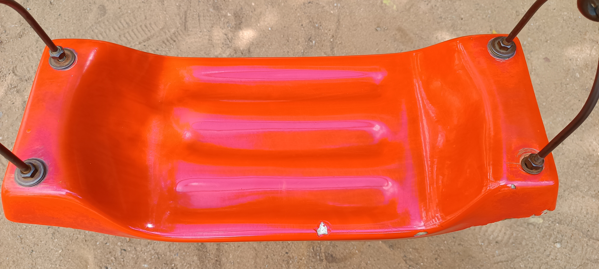

Case study in between google lens & mobilenet let us see which is acurrate.
Google lens 
vs
-
Test Image -

Output on Google Lens - Lucky bamboo
Output on Mobilenet model - oxygen mask
Result -
Google Lens is more acurate than Mobilenet model
- Test Image - 